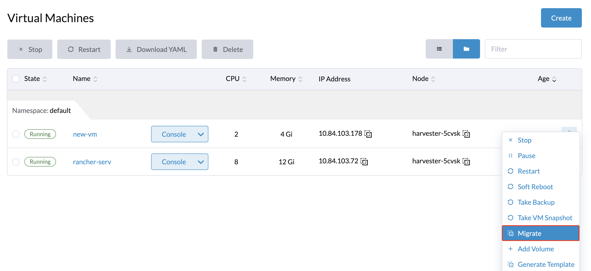

ライブマイグレーション
ライブマイグレーションとは、ダウンタイムなしで仮想マシンを別のホストに移動することを意味します。ライブマイグレーションを実現するために、いくつかの包括的なプロセスとタスクが裏で行われます。
前提条件
ライブマイグレーションは、以下の要件が満たされるときに発生します：
-
現在のノードに加えて、クラスタには仮想マシンのスケジューリングルールに一致する少なくとも1つのスケジュール可能なノードがあります。
-
移行先ノードには、仮想マシンをホストするのに十分なリソースが利用可能です。
-
仮想マシンが要求するCPU、メモリ、ボリューム、デバイスおよびその他のリソースは、ソース仮想マシンがまだ稼働している間に、移行先ノードにコピーまたは再構築できます。
移行不可能な仮想マシン
仮想マシンは、以下のいずれかを持っている場合、移行不可能と見なされます：
-
以下のプロパティを持つボリューム：
-
タイプ：
CD-ROM`または`Container Disk -
アクセスモード：
ReadWriteOnce -
StorageClassのレプリカ数：
1（これはすべてのケースで検出されるわけではありません。）
-
-
`PCI`や`vGPU`などのホストデバイスのパススルー
-
特定のノードに仮想マシンをバインドするノードセレクタ
-
1つのノードにのみ一致するスケジューリングルール。
以下は、実行時にチェックされるルール条件の例です：
-
仮想マシンは、1つのノードのみをカバーするクラスタネットワークに接続されています。
-
仮想マシンでCPUピンニングが有効で、CPUマネージャーは1つのノードでのみ有効です。
-
仮想マシンには、特定の他の仮想マシンと共存することを防ぐ厳格なアンチアフィニティルールがあります。
詳細については、自動適用アフィニティルールを参照してください。
|
仮想マシンをライブマイグレーションするには、まず移行できないデバイスを削除し、スケジュール可能なノードを追加する必要があります。 |
マイグレーションの仕組み
VirtualMachineInstanceMigration オブジェクト
仮想マシンのマイグレーションアクションがトリガーされると、操作の状態と進行状況を追跡するために`VirtualMachineInstanceMigration`オブジェクトが作成されます。SUSE Virtualizationコントローラーは、インスタンスオブジェクトのアイデンティティがマイグレーションオブジェクトに反映されることを保証することによって、`VirtualMachineInstanceMigration`オブジェクトと`VirtualMachineInstance`オブジェクトを関連付けます。
次の例では、demo`という名前の仮想マシンに関連付けられたマイグレーションオブジェクトがあります。このオブジェクトのUIDは、マイグレーション中にインスタンスオブジェクトの.status.migrationState.migrationUID`プロパティに追加されます。
$ kubectl get vmi demo -ojsonpath={.status.migrationState.migrationUID}
1d6d7273-275d-48e0-bb76-62e240b42aaf
インスタンスオブジェクトの名前は、マイグレーションオブジェクトの`.spec.vmiName`プロパティに追加されます。
$ kubectl get vmim demo-6crrk -ojsonpath={.spec.vmiName}
デモ
`VirtualMachineInstanceMigration`オブジェクトの名前の形式は、マイグレーションが手動でトリガーされた場合と自動でトリガーされた場合で異なります。
Migrate メニュー項目からマイグレーションがトリガーされると、VirtualMachineInstanceMigration`オブジェクトの名前には仮想マシンの名前とランダムな文字列（例：`vm1-a3d1f）が接頭辞として付加されます。
マイグレーションが自動的にトリガーされると、VirtualMachineInstanceMigration`オブジェクトの名前には`kubevirt-evacuation-`とランダムな文字列（例：`kubevirt-evacuation-9c485）が接頭辞として付加されます。
|
SUSE Virtualization UIは、マイグレーションのソースを指定しません。この情報を取得するには、`VirtualMachineInstanceMigration`オブジェクトの名前を確認する必要があります。 |
CPUモデルの一致
各ノードには、異なるキーでラベル付けされた複数のCPUモデルがあります。
-
主要なCPUモデル:
host-model-cpu.node.kubevirt.io/{cpu-model} -
サポートされているCPUモデル:
cpu-model.node.kubevirt.io/{cpu-model} -
マイグレーションにサポートされているCPUモデル:
cpu-model-migration.node.kubevirt.io/{cpu-model}
ライブマイグレーション中、コントローラーはVirtualMachineInstance (VMI) CR内の`spec.domain.cpu.model`の値を確認します。この値は、VirtualMachine (VM) CR内の`spec.template.spec.domain.cpu.model`から派生しています。`spec.template.spec.domain.cpu.model`の値が設定されていない場合、コントローラーはデフォルト値`host-model`を使用します。
`host-model`が使用されると、プロセスは主要なCPUモデルの値を取得し、新しく作成されたポッドの`spec.NodeSelectors`にラベル`cpu-model-migration.node.kubevirt.io/{cpu-model}`を設定します。
また、`spec.domain.cpu.model`でCPUモデルをカスタマイズすることもできます。例えば、CPUモデルが`XYZ`の場合、プロセスは新しく作成されたポッドの`spec.NodeSelectors`にラベル`cpu-model.node.kubevirt.io/XYZ`を設定します。
ただし、`host-model`は同じCPUモデルを持つノードへのVMのマイグレーションのみを許可します。詳細については、制限事項を参照してください。
マイグレーションの開始
-
*仮想マシン*ページに移動します。
-
マイグレーションしたい仮想マシンを見つけて、*⋮ > マイグレーション*を選択します。
-
仮想マシンをマイグレーションしたいノードを選択します。*適用*をクリックします。

|
マイグレーションメニューオプションは、以下の状況では利用できません:
|

マイグレーションの中止
-
*仮想マシン*ページに移動します。
-
中止したいマイグレーション状態の仮想マシンを見つけてください。*⋮ → マイグレーションの中止*を選択します。
|
自動トリガーされたバッチマイグレーション
アップグレードとノードメンテナンスは、両方ともライブマイグレーションの恩恵を受けます。基盤となるプロセスは*バッチマイグレーション*と呼ばれ、マイグレーションの開始で説明されているものとは少し異なります。このプロセスには以下のステップが含まれます：
-
コントローラーは、ノードオブジェクト上の専用のテイントを監視します。
-
コントローラーは、現在のノード上の各ライブマイグレーション可能な仮想マシンのために`VirtualMachineInstanceMigration`オブジェクトを作成します。
-
マイグレーションはキューに入れられ、内部でスケジュールされ、バッチで処理されます。SUSE Virtualization UIは、進行状況を示すために保留中のマイグレーションとマイグレーション中のステータスを表示します。
-
コントローラーは処理を監視し、すべてが完了するかタイムアウトするまで待機します。
マイグレーションタイムアウト
制限
CPUモデル
`host-model`は、仮想マシンを同じCPUモデルを持つノードにのみ移行することを許可します。ただし、CPUモデルを指定することは常に必要ではありません。CPUモデルが指定されていない場合は、仮想マシンをシャットダウンし、すべてのノードでサポートされているCPUモデルを割り当ててから、仮想マシンを再起動する必要があります。
例:
-
ノード:
host-model-cpu.node.kubevirt.io/XYZcpu-model-migration.node.kubevirt.io/XYZcpu-model.node.kubevirt.io/123 -
Bノード:
host-model-cpu.node.kubevirt.io/ABCcpu-model-migration.node.kubevirt.io/ABCcpu-model.node.kubevirt.io/123
host-model`を持つ仮想マシンの移行は、`host-model-cpu.node.kubevirt.io`の値が同一でないため不可能です。ただし、両方のノードは`123 CPUモデルをサポートしているため、以下のいずれかの方法を使用して`123` CPUモデルを持つ仮想マシンを移行できます:
-
クラスターレベル:`kubectl edit kubevirts.kubevirt.io -n harvester-system`を実行し、`spec.configuration.cpuModel: "123"`を追加します。この変更は、新しく作成された仮想マシンにも影響します。
-
個別の仮想マシン:仮想マシンの設定を変更して`spec.template.spec.domain.cpu.model: "123"`を含めます。
両方の方法では、VMを再起動する必要があります。クラスタ内のすべてのノードが特定のCPUモデルをサポートしていることが確実な場合は、VMを作成する前にクラスターレベルでこれを定義できます。そうすることで、ライブマイグレーション中にVMを再起動する必要がなくなります（CPUモデルを割り当てるため）。
ネットワーク障害
ライブマイグレーションはネットワーク障害に非常に敏感です。マイグレーション中にソースノードとターゲットノード間のネットワーク接続が中断されると、さまざまな結果が生じる可能性があります。
mgmt ネットワーク障害
mgmt（ビルトインクラスタネットワーク）を介したライブマイグレーションは、ソースノードとターゲットノードの管理インターフェースの可用性に依存します。mgmt ネットワーク障害は、マイグレーションプロセスを妨げるだけでなく、全体的なノード管理にも影響を与えるため、重要と見なされます。
VMマイグレーションネットワーク障害
VMマイグレーションネットワークは、マイグレーショントラフィックを他のネットワーク活動から隔離します。このセットアップは、特に高いネットワークトラフィックのある環境でマイグレーションのパフォーマンスと信頼性を向上させますが、特定のネットワークの可用性に依存することにもなります。
VMマイグレーションネットワークの障害は、マイグレーションプロセスに以下のような影響を与える可能性があります：
-
短時間の中断：マイグレーションプロセスが突然停止します。接続が復元されると、プロセスは再開され、遅延はあるものの成功裏に完了します。
-
長時間の障害：マイグレーション操作がタイムアウトし、失敗します。ソース仮想マシンは、ソースノード上で通常通りに動作し続けます。
マイグレーションプロセスはピアツーピアモードで実行され、これはソースノード上のlibvirtデーモン（libvirtd）が宛先デーモンを直接呼び出してマイグレーションを制御することを意味します。ビルトインのキープアライブメカニズムにより、マイグレーションプロセス中にクライアント接続がアクティブな状態に保たれます。接続が特定の期間非アクティブなままだと、接続は閉じられ、マイグレーションプロセスは中止されます。
デフォルトでは、キープアライブ間隔は5秒に設定されており、再試行回数は5回に設定されています。これらのデフォルト値を考慮すると、接続が30秒間非アクティブな場合、マイグレーションプロセスは中止されます。しかし、マイグレーションは実際のクラスターの状況に応じて、早くまたは遅く失敗する可能性があります。